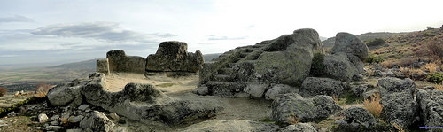
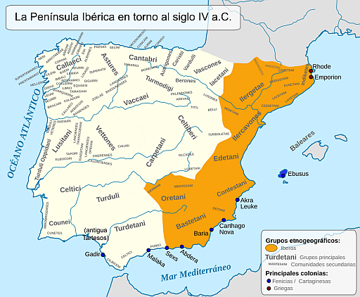
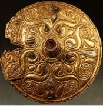

Celtas
Introducción
Las primeras evidencias escritas sobre los celtas en Hispania provienen de textos antiguos como la Ora Maritima de Avieno y las obras de Herodoto. Estos documentos mencionan la presencia de pueblos celtas en la península, proporcionando una visión temprana de su distribución geográfica y sus características culturales. A lo largo de los siglos, la percepción de los celtas ha evolucionado, con estudios que han pasado de considerar a los celtas como invasores procedentes de la Galia a reconocer su presencia autóctona en la península, influenciada por múltiples oleadas migratorias y contactos culturales.
En la parte de la Península más alejada de la influencia mediterránea habitaban numerosos pueblos, generalmente organizados en sociedades tribales dirigidas por jefes guerreros. La mayoría hablaban lenguas emparentadas con el latín, el griego o el inglés. Se les llama lenguas indoeuropeas. Pero eran muy diferentes unos de otros. Algunos se dedicaban más a la ganadería y otros a la agricultura. Algunos vivían dispersos, otros vivían en pequeños centros fortificados (castros) y otros empezaban a tener auténticos centros urbanos. Pese a esas diferencias, los griegos y los romanos describieron a muchos de ellos como celtas.
|  |
| Altar de sacrificios de Ulaca (Solosancho, Soria), uno de los mayores centros fortificados de la Península. Imagen de santiago lópez-pastor en Flickr. Licencia CC BY-ND. |
Importante
En la parte de la Península más alejada de la influencia mediterránea había muchas sociedades tribales dirigidas por jefes guerreros. Muchas de ellas eran celtas.
|  |
|
Imagen de Alcides Pinto en Wikimedia Commons (modificada). Licencia CC BY-SA. |
Guerreros pastores y castros fortificados
Los celtas de Hispania eran conocidos por su estilo de vida como guerreros y pastores, habitando en castros fortificados que controlaban los valles circundantes. Estos asentamientos, caracterizados por sus casas redondas y fortificaciones, reflejan una sociedad organizada en torno a la defensa y el control de los recursos. Los celtas mantenían una economía basada en la ganadería y el intercambio de metales, como el estaño y el oro, con otras regiones atlánticas. Su estructura social, menos compleja que la de otras culturas, se centraba en jefaturas locales, documentadas a través de estelas y esculturas de guerreros.
Importancia de los celtíberos en la expansión cultural
Importancia de los celtíberos en la expansión cultural
Los celtíberos, una mezcla de celtas e iberos, desempeñaron un papel crucial en la expansión cultural y territorial de los celtas en Hispania. Estos grupos, asentados en el sistema Ibérico y la Meseta, desarrollaron una cultura propia que influyó en otros pueblos de la península. Los celtíberos eran conocidos por su habilidad como guerreros, lo que les permitió expandirse y celtiberizar a otros grupos, como los vacceos y vettones. Su lengua, el celtibérico, forma parte del Celta Continental y se ha conservado en inscripciones que datan del siglo III a. C., proporcionando valiosa información sobre su cultura y sociedad.
Curiosidades: El legado celta
Toponimia y elementos culturales actuales
El legado celta en Hispania es evidente en la toponimia y en diversos elementos culturales que se han mantenido vivos hasta la actualidad. Nombres de ríos como el Deva, el Nervión y la Pisuerga, o de ciudades como Segovia y Salamanca, tienen un origen celta que atestigua la presencia histórica de estos pueblos en la península. Además, elementos culturales como los hórreos gallegos y asturianos, y la tradición de beber cerveza, palabra de origen celta, son testimonio de la influencia celta en la vida cotidiana de los habitantes de la región.
Conservación de tradiciones y creencias
Las tradiciones y creencias celtas han perdurado a lo largo de los siglos, adaptándose a los cambios culturales y sociales. Ritos en peñas, árboles y fuentes sagradas, así como festividades populares, conservan elementos de las antiguas creencias celtas. El santuario de San Andrés de Teixido, por ejemplo, es una cristianización de las creencias celtas en la metempsicosis. Estas tradiciones, junto con la literatura oral y las leyendas transmitidas de generación en generación, forman parte del rico patrimonio cultural de la península ibérica.
Patrimonio Cultural: los celtas de Hispania
El reconocimiento de los celtas de Hispania como parte del Patrimonio Cultural es fundamental para la preservación de su legado. Los restos arqueológicos y las tradiciones folklóricas asociadas a los celtas son una fuente invaluable de conocimiento sobre el pasado de la península. Además, representan una atractiva oferta turística que puede contribuir al desarrollo de regiones apartadas y despobladas. Proteger y promover este patrimonio es esencial para mantener viva la memoria de los celtas y su influencia en la historia y cultura de Hispania.
Para saber más
|  |
| Este disco de bronce y oro hallado en Francia (IV a.C.) es un típico ejemplo del arte celta. Imagen de Gun Powder Ma en Wikimedia Commons. Licencia CC BY-SA. |
Los celtas
Los celtas eran un conjunto de pueblos procedentes de la actual Francia y el centro de Europa que hablaban una serie de lenguas emparentadas con el actual irlandés, galés o bretón. Compartían muchos rasgos culturales, como la religión y la forma en que vestían y combatían. Pero además muchos elementos de la cultura céltica se habían extendido entre las aristocracias guerreras de toda la Europa atlántica, de la misma forma en que la cultura fenicia y griega se habían extendido por el Mediterráneo. Así que los griegos y romanos (a los que tampoco preocupaba demasiado distinguir bien a los pueblos "bárbaros") llamaron celtas a muchos pueblos que simplemente se parecían a ellos.
En el caso de la Península Ibérica, las descripciones más antiguas describen en general todo el oeste y el norte peninsular como "celta". Pero con el tiempo, el término se fue limitando a pueblos más concretos. Sabemos que hablaban una lengua celta los celtíberos, que habitaban en ciudades entre el valle del Ebro y el Sistema Ibérico. Muy parecidos a ellos eran las poblaciones celtas que habitaban en las serranías de las actuales Huelva y Badajoz. Se extendían por el sur hasta la Sierra de Cádiz.
Obra publicada con Licencia Creative Commons Reconocimiento No comercial Compartir igual 4.0